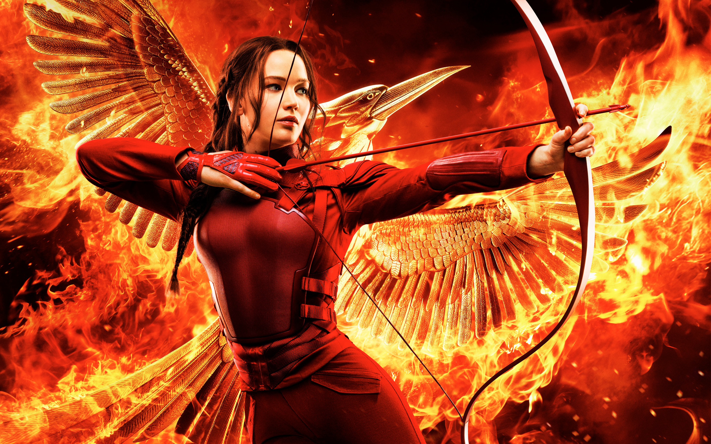

Sobre Katniss
Katniss Everdeen es el personaje principal y narradora de la trilogía de Los Juegos del Hambre. Después de que su hermana menor, Prim, es elegida para participar en los 74.os Juegos del Hambre, Katniss se ofrece voluntaria para tomar el puesto de tributo femenino del Distrito 12.
Katniss luchando
Otros personajes
Pulsa en los links de abajo para conocer más acerca de ellos
Características de Katniss
Sus actos de rebeldía contra el Capitolio en la arena condujeron al pueblo de Panem a verla como la cara de la rebelión. Más tarde se convirtió en lo que se llamó "el Sinsajo" y encabezó la rebelión contra el Capitolio, poniendo fin a una supresión de 75 años.
- Valiente
- Astuta
- Fuerte
- Leal